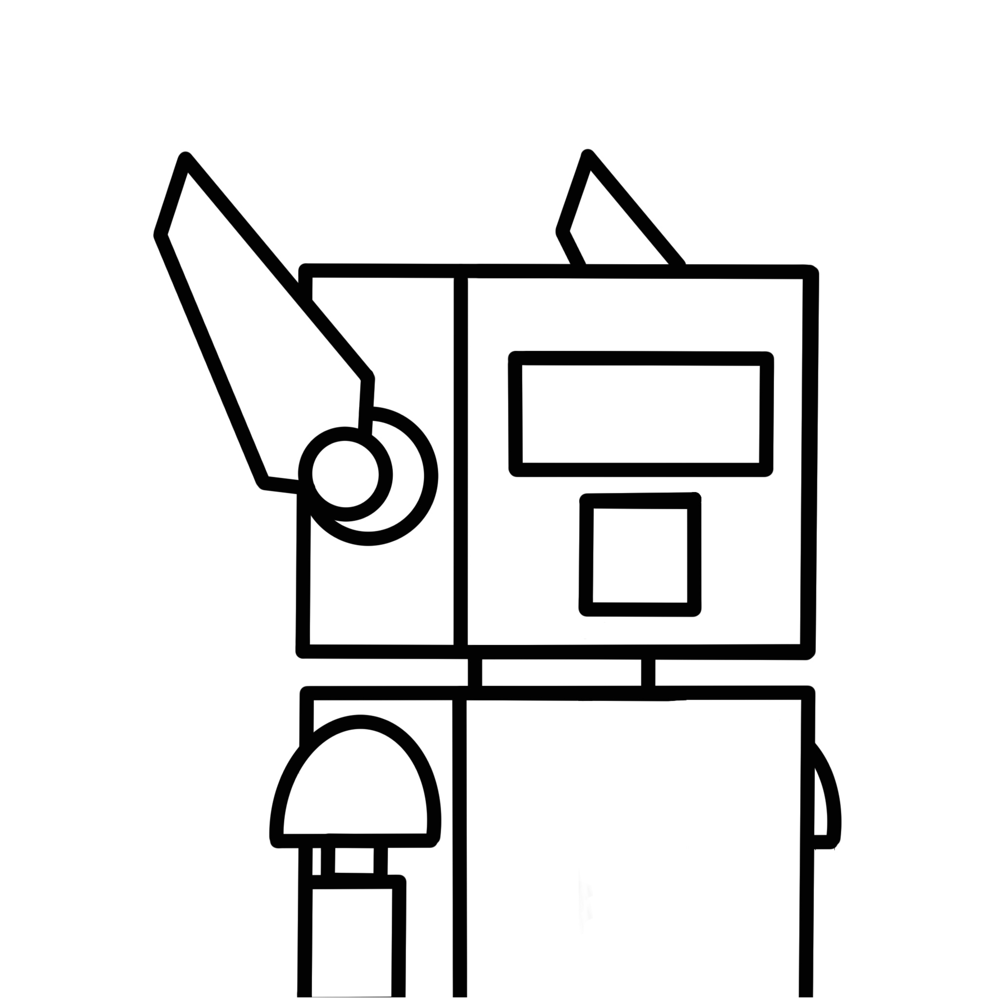
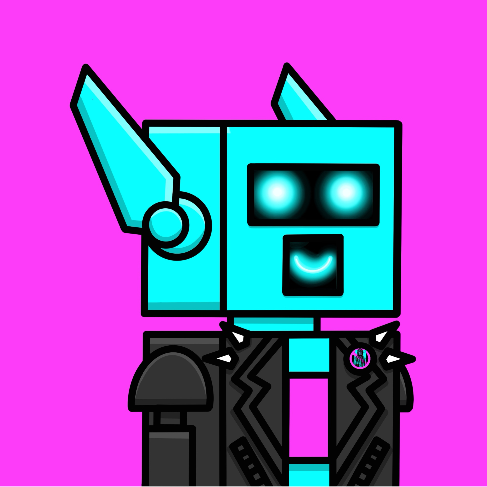
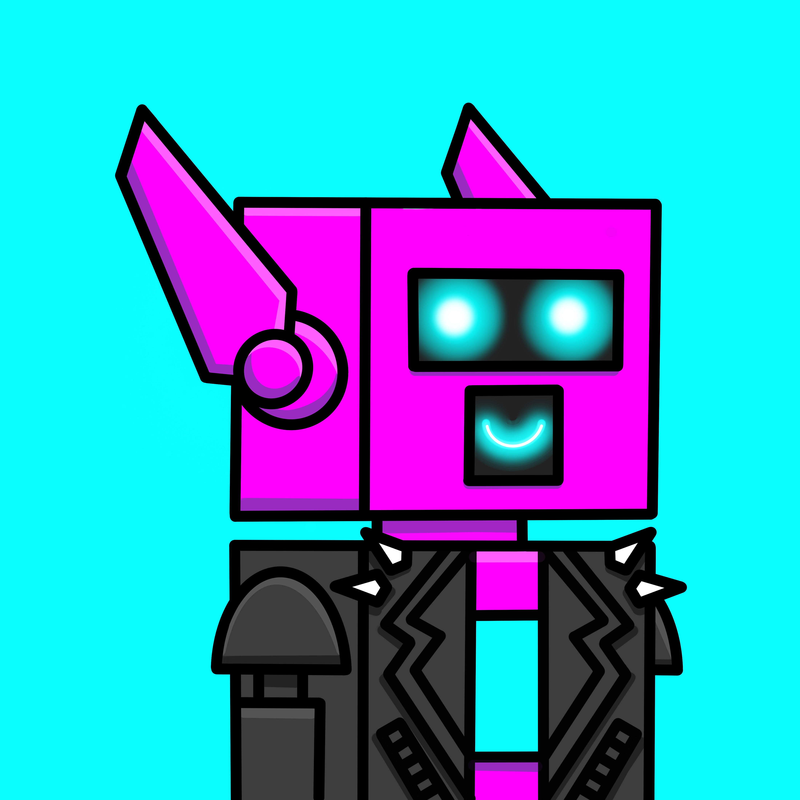
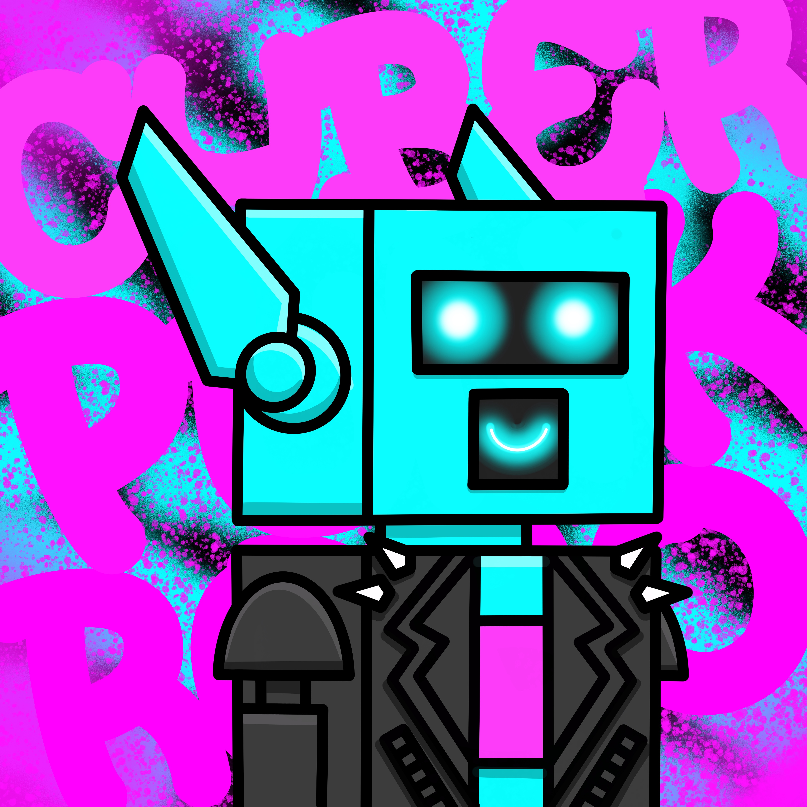
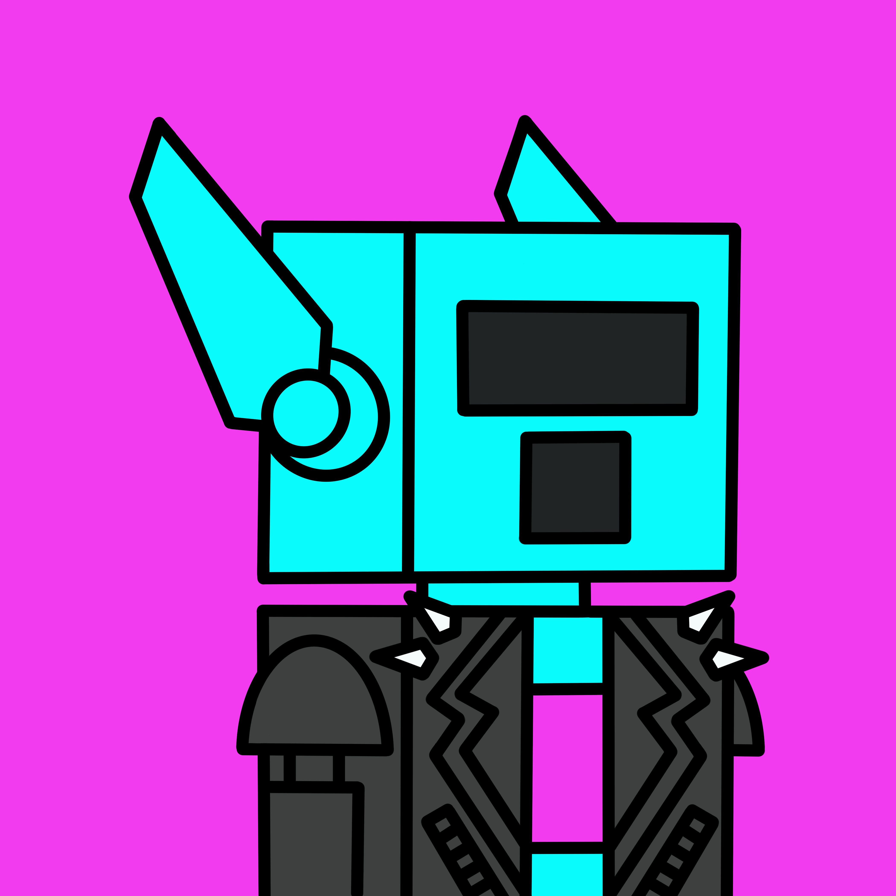
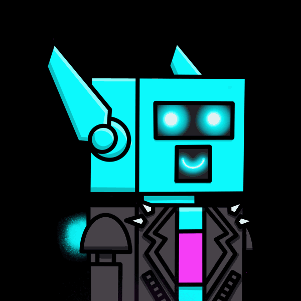

Why I am learning to code...
and taking online lessons.
In 2012 I started developing websites using Wix.com and created my own website for my buisness Fawcett Tattoos. Over the years I have kept it up to date and made changes...to which many of my clients have told my husband and I that our website looks super professional. I have even been hired to help other people build websites. I have sinced thought about getting more into coding to expand upon the drag and drop website building method.
After I started homeschooling my childeren I tried to get them into coding because I thought it would be fun for them and a cool skill to have. They did not like it and told me if I thought it was so cool I should get into it. This prompted me to consider the idea that maybe I wanted to learn and thats why I wanted them to learn. Maybe it was a part of me that wanted to live vicariously through them.
During the pandemic in 2021 there was a big outcry about artists having their art or "data" scrapped by AI from the internet and social media, without their consent, for genertive art AI. Soon after this Klaus Schwab and the WEF made an announcment that their goal is for AI and Robotics to take over the human workforce by 2030. So I too joined the movement against unethical AI. I begain to think...in a world where humans are "obsolete"...what is our purpose and how will we make money to live? I decided to get into coding to be the solution to the problem. I not only wanted to create an Ethical Art AI but create a decentrilized system that pays contributors. Although I know the WEF has a "happytalism" plan where "you will own nothing and be happy"...everyone will be on a subscription model for life.... earn a UBI (Universal Basic Income)...and we will have a (CDC) Centrilized Digital Currency with a Digital Personification for identificaiton purposes, I couldn't help but think...this "utopian" dream sounds like a "dystopian" nightmare where the rich 1% own everything and 99% of everyone else is poor! There has to be a better solution!
After I started to learn more about the the World Wide Web (www) and Hypertext Transfer Protocol (HTTP) was created by a CERN scientist, Sir Tim Berners-lee I wanted to not only create an Ethical Art AI that asks for consent, gives credit and compansates artists but also lives on WEB3. I wanted create a DAPP (Decentrilized Application) controled by a DAO (Decentrilized Autonomous Orginization) so all users could have voting rights on how the app evoloved...a true democracy. Now, in 2025, I now this is the more important then ever since President Trump went to Davos for the WEF and announced he will be sowing $500billion into AI tech...the very tech that will replace millions of jobs!
I knew that to do all this I would have to understand blockchain tech because I want to create my own Gold Backed Cryptocurrancy to run it. And to make money for this I would need some kind of hook to get attention...much like more profile picture join the two worlds...or two sides of my brain...art and tech.
So I created "CyberPunk ROBO" which would be my first NFT prototype. This character is an ideation of mine to combine my pursuits into cyber security "ethical hacking" as a cyber punk and a movie I thought was cool... Chappie.
My idea is to make an AI that generates vatiations of this NFT and sell them to earn enough money to make my own cryptocurrancy then create the DAO for the Ethical Art AI. From there I hope to make a Basic Social platform like Instagram used to be before Meta took it over an put ads, suggested feeds and endless scroll features in.
Recent Work

ROBO Outline
This is the bare bones of the design I created using simple shapes for my first NFT project. I faced my character looking towards the right because in character design when a character faces to the right it means "looking to the future".

Cyber Punk ROBO Prototype
This is the design all fleshed out with full color, shadows, and highlights as a Prototype. I added a leather jacket with studes and a "no unethical AI" Pin to symbolize a "cyber punk" or ethical hacker.

Cyber Punk ROBO Variations
This is a varision of the prototype changing basic elements like the background and main character. Using RGB basic colors I can make 16,777,216 different color background variations, 16,777,216 Character variations, 16,777,216 clothing variations, 16,777,216 jacket variations and trillions of combonations.

Cyber Punk ROBO Artistic
This is a more advanced version of the NFT Prototype with an artistic background. I will be building and using my own AI to generate basic variations which will be sold for $1 each. This more artistic & custom versions like this one will each be unique & done by a human artist so they will be priced higher.

Cyber Punk ROBO Animated
This is an animated version of the NFT Prototype. This animation took 10 frames to make this .GIF file. Each frame is an art peice of its own. The price of an animated Cyber Punk ROBO will be $1 per frame. This one would be $10 for 10 frames.

Cyber Punk ROBO Complex Animation
This is a complex animated version of the NFT Prototype. This animation has 50 frames to make this animated GIF file. Each frame is an art peice of its own. The fame of the animated Cyber Punk ROBO will be sold for $1 per frame. This complex animation would be $50 for 50 frames.
Subscribe to My News Letter
Want to stay up to date on my new business, Mrs. Roboto Labs, the launch of my Cyber Punk ROBO NFTs and more? Click on the "Sign Up!" button below and fill out your information.
-
Address
Mrs. Roboto Labs
0101 Somewhere Rd.
Edmonton, AB 000101
Canada
-
Phone
001-011-0101
-
Email
AutumnFawcett@gmail.com

{kind=link}
{kind=link}
{kind=link}
{kind=link}
{kind=link}
{kind=link}